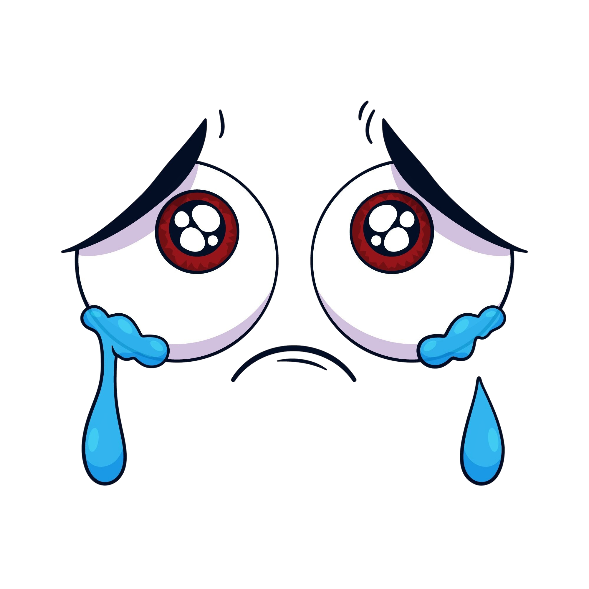

TRISTEZA
mustio, melancólico, taciturno. funesto, deplorable, aciago, infausto, lamentable, luctuoso,
lúgubre, trágico, desgraciado, nefasto. doloroso, duro, difícil, enojoso, amargo.
DILE HOLA A TRISTEZA, NO LA IGNORES :(
La tristeza no necesita ser ignorada... solo escuchada.